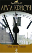

Суперинтендант - звание в британской полиции, примерно соответствующее армейскому майору. Одним из любимых героев Агаты Кристи является суперинтендант Баттл, специализирующийся на щепетильных криминальных делах, чреватых серьезными политическими последствиями. В этой книге ему предстоит разоблачить тайную организацию "Братство Красной Руки" ("Тайна замка Чимниз"), а также заняться кражей государственных секретов из министерства иностранных дел ("Тайна Семи Циферблатов").